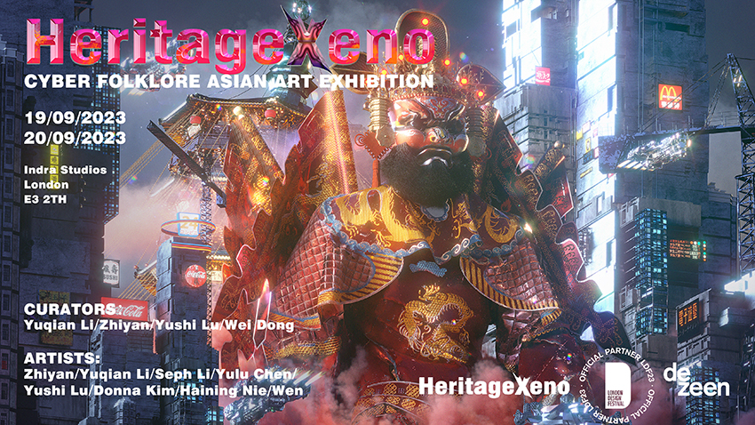

Cyber Folklore Asian Art Exhibition
HeritageXeno is a Cyber Folklore Asian Art Exhibition presented as part of London Design Festival 2023, with Dezeen as official partner. The exhibition brought together artists working at the intersection of folk mythology, regional cultural heritage, and speculative futures — reinterpreting traditional narratives through digital, cyberpunk, and contemporary visual languages.
The exhibition examined how artists of Asian heritage living and working in the diaspora navigate between cultural inheritance and contemporary urban experience, producing work that neither romanticises tradition nor abandons it, but transforms it into something new.
The title HeritageXeno encapsulates this dual orientation: heritage as rootedness in cultural memory, and xeno (from the Greek for “stranger” or “foreign”) as the productive estrangement that arises from crossing between worlds.
Yuqian Li, Zhiyan, Yushi Lu, Wei Dong
Zhiyan, Yuqian Li, Seph Li, Yulu Chen, Yushi Lu, Donna Kim, Haining Nie, Wen